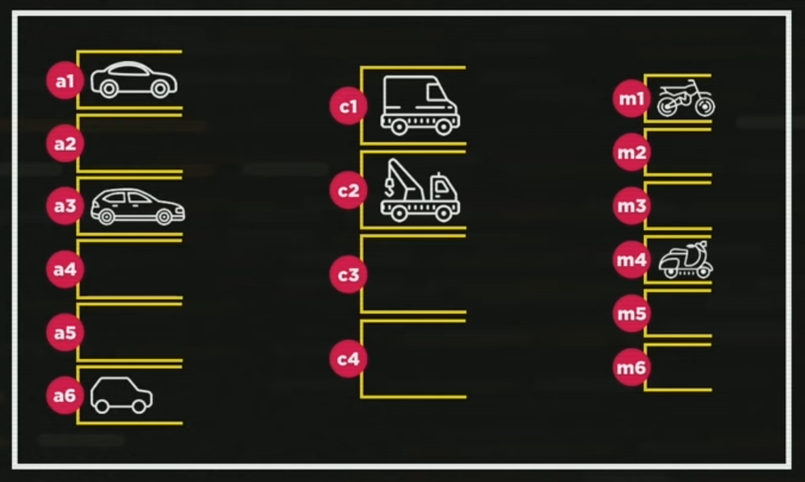

Javascript Aula 04 
Vamos aprender Javascript
Sempre que aprender uma liguagem nova de programação, deseje:
Olá, mundo!
Pronto, já nos livramos da maldição.
Nesta aula Guanabara falou sobre a parte de conteudo, e tudo que é conteudo nesse caso é HTML, também olhamos sobre a parte de design do site o CSS, atraves do style.
Também vi um inicio de JS onde inseri os primeiros scripts no final desse código.
Javascript Aula 05 - Variáveis e Tipos Primitivos
Nesta aula aprendi que posso fazer comentário em uma linha usando //.
E para fazer um comentário em mais de uma linha de código utilize /* */ ex:
/* ...mais de uma
linha de
código... */
Vendo o exemplo do estacionamento, aprendi que o sinal de = em Javascript chama-se recebe.
Vimos que a vaga demarcada como vaga A1 estava com carro1 mas pode receber carro2 desde que o carro1 saia da vaga, e se eu ordenar que a vaga não receba mais nenhum carro, em Javascript usa-se null.
Sendo assim as vagas do estacionamento citado no exemplo do Guanabara, são chamadas de variaveis, identificamos com var.

Assim como acontecem na memória do nosso computador, podendo receber dados em respectivos espaços, chamados Variáveis.
Aprendi que dentro de uma string que se encontra dentro das Variáveis como visto no exemplo do Guanabara, podemos utilizar três tipos de aspas, Ex: Aspas dupla '', Aspas simples ' conhecido como apóstrofo, e a cráse `.
Ex:
var S1 = "Javascript"
var S2 = 'curso em vídeo'
var S3 = `Guanabara`